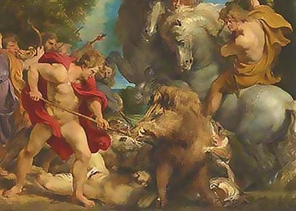

Ở vùng Arcadie trên ngọn núi Érymanthe có một con lợn rừng to lớn và cực kỳ hung dữ. Nó thường xuống vùng đồng ruộng ở dưới chân núi phá hoại hoa mầu gây thiệt hại cho đời sống của dân lành. Cả đến đô thành Psophis dưới chân núi, người ở đông như thế mà nó vẫn không sợ. Gặp người là nó lao thẳng tới húc. Vì thế chưa có một tay thợ săn nào đám đương đầu với nó, nhất là khi chưa có một thứ vũ khí gì có thể đâm thủng được lớp da dày cứng của nó. Eurysthée giao cho Héraclès phải bắt sống con lợn rừng này về. Y nghĩ rằng giao cho Héraclès giết chết ác thú thì chẳng có gì khó khăn cả, phải giao cho Héraclès bắt sống thì may ra mới buộc được Héraclès đầu hàng trước khó khăn.
Héraclès ra đi. Trên đường đến vùng nùi Érymanthe, chàng vào thăm Centaure Pholos, một người bạn thông thái của chàng. Centaure Pholos tiếp đãi người con của thần Zeus rất chân tình và long trọng. Một thứ rượu quý ủ lâu năm mà rất ít khi Pholos đem ra tiếp đãi bạn bè, ngay cả những người bạn cùng dòng giống nửa người nửa ngựa của mình, được lấy ra mời Héraclès. Vò rượu mở ra, mùi thơm ngào ngạt bay đi đến nỗi cá dưới nước ngửi thấy cũng thèm, chim trên trời ngửi thấy cũng muốn uống. Mùi thơm bay đi làm cho các bạn của Centaure Pholos ngửi thấy và nổi giận. Bọn chúng cho rằng Pholos đã coi thường anh em, lấy của quý, đặc sản của dòng giống Centaure ra thết đãi người không cùng huyết thống. Thế là chúng kéo đến gây sự xông vào đánh đôi bạn đang chụm đầu vào nhau say sưa chén vui chén nhớ hàn huyên tâm sự. Héraclès nhanh như cắt, đối phó lại ngay, chàng rút luôn những thanh củi đang cháy bừng bừng trong bếp ném vào bọn Centaure. Biết không thể kiếm chác được gì trong cuộc gây rối này, lũ Centaure bảo nhau chạy trốn. Nhưng Héraclès không tha quân côn đồ càn quấy, chàng truy đuổi chúng đến tận Malée. Cùng đường, bọn chúng phải chạy trốn vào trong hang của vị thần Centaure Chiron, một vị thần nửa người nửa ngựa đã truyền dạy cho các anh hùng, dũng sĩ biết bao điều hiểu biết uyên thâm. Héraclès đuổi theo và giương cung bắn, giết chết một số trong bọn chúng. Nhưng đau đớn làm sao một mũi tên của chàng không trúng lũ côn đồ mà lại trúng đầu gối người thầy Centaure Chiron tài cao học rộng của chàng! Làm thế nào cứu chữa được bây giờ? Héraclès chỉ còn cách cúi đầu xin thầy tha thứ cho sự lầm lẫn đó. Còn Chiron biết mình không thể qua khỏi được, đã tự nguyện từ bỏ thế giới huy hoàng của ánh sáng mặt trời xuống sống dưới vương quốc tối tăm của thần Hadès.
Héraclès buồn rầu ra đi. Chàng suy tính cách bắt sống con vật. Chắc chắn chàng đuổi nó thì không sức nào đuổi kịp. Phải đợi cho đến mùa lạnh tuyết rơi. Và đúng thế, khi tuyết đã phủ dày trên núi và các cánh đồng, Héraclès tìm vào hang ổ con vật. Bằng tiếng thét như sấm, chàng làm cho con vật kinh hãi rời khỏi ổ, chạy ra ngoài. Và chàng cứ thế vừa đuổi theo vừa hò hét. Tuyết dày, mỗi bước đi là mỗi bước lún, vì thế chẳng mấy chốc con vật cuồng chân, kiệt sức nằm lăn ra. Héraclès chỉ việc đến tóm cổ, trói chặt, vác lên vai mang về. Chàng đến trình diện Eurysthée với con lợn trên vai. Ôi chao, tên vua này vừa trông thấy đã rụng rời cả người. Hắn cuống cuồng bỏ chạy, chui vào trong một cái vại bằng đồng mà hắn đã dành sẵn làm nơi ẩn náu những khi nguy hiểm. Hắn cứ ngồi lì trong đó cho đến khi có tin báo Héraclès đã ra đi rồi, lúc đó hắn mới hoàn hồn và chui ra khỏi vại.
